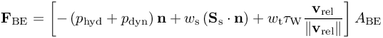
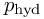
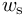
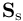
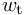
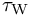
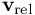

Simulate with complex geometries and complex physics
LS-DYNA
LS-DYNA -- direct interface to LS-DYNA via user loading (experimental)
For more information regarding LS-DYNA, see http://www.lstc.com/products/ls-dyna
If you are interested in running MESHFREE and LS-DYNA together, please contact our Support team.
Please note that you need to have a valid license for LS-DYNA, which we cannot provide.
ExecutableCurrently, the following versions of LS-DYNA can be provided together with MESHFREE (MESHFREE part compiled and everything linked on centOS6.4, which is equivalent to RedHat 6.4):
- R9.3 double precision (ls-dyna_mpp_d_R9_3_0_x64_redhat54_ifort131_sse2_intelmpi-413)
- R9.3 single precision (ls-dyna_mpp_s_R9_3_0_x64_redhat54_ifort131_sse2_intelmpi-413)
- R8.1 single precision (ls-dyna_mpp_s_r8_1_105897_x64_redhat54_ifort131_sse2_intelmpi-413)
User loading needs to be switched on in LS-DYNA with the following lines in the keyword file (or any included file). The parameter values are ignored. All MESHFREE input is in the standard MESHFREE input files USER_common_variables and common_variables.
*USER_LOADING
$# parm1 parm2 parm3 parm4 parm5 parm6 parm7 parm8
-100.0 0.0 0.0 0.0 0.0 0.0 0.0 0.0
LS-DYNA and MESHFREE both choose their time steps independently, see also LSDYNA_AbortIfTLDgreaterTMF. Whenever LS-DYNA requires the load on its parts, it calls the routine loadud, which in turn calls MESHFREE.
During the first call, the geometry is passed over to MESHFREE and translated to the internal geometry format. For 3D solid parts (ixh), the surface is extracted and saved as quads or triangles (see also LSDYNA_ConvertQuadToTria). LS-DYNA 2D shell elements (ixs) are thickened into 3D elements with LSDYNA_ShellElement_ThicknessOffset and then treated the same as solids. Beam elements (ixb) are ignored by the interface.
In all calls, if the LS-DYNA simulation has reached a later time than the MESHFREE simulation, nodal positions of the geometry are updated in MESHFREE with the information provided by LS-DYNA. With this new information, MESHFREE computes time steps until the LS-DYNA time has been exceeded again. The pressure and shear stresses are saved per boundary element, projected onto the geometry nodes in LS-DYNA and returned.
MESHFREE Alias Settings for InterfaceGeometry parts passed over to MESHFREE from LS-DYNA are assigned numbers as alias names, starting at 1, in the order of their part id in LS-DYNA. For each of these, you must assign an AliasForGeometryItems. These will be treated in the same way as any other geometry items with respect to the point cloud.
It is important to set MOVE-1, so that the movement from LS-DYNA is not overwritten by another MOVE statement in MESHFREE. Parts that appear in LS-DYNA but are not required for the MESHFREE part of the simulation, can be turned off with IGNORE or set to %BND_BlindAndEmpty%.
Additional BoundaryElements can be included as well.
Example:
begin_alias{}
"1" = " MOVE-1 ACTIVE$init_always$ BC$wall$ IDENT%BND_slip% MAT$fluid$ TOUCH%TOUCH_liquid% CHAMBER1"
"2" = " MOVE-1 ACTIVE$nofill_always$ BC$wall$ IDENT%BND_slip% MAT$fluid$ TOUCH%TOUCH_liquid% CHAMBER1 POSTPROCESS$PPlsdyna2$"
"3" = " MOVE-1 ACTIVE$init_always$ IDENT%BND_BlindAndEmpty% "
"4" = " IGNORE___alias___ "
end_alias
The force is computed per boundary element at its center of gravity

and then split up over the BE nodes to be passed back to LS-DYNA.
The variables are
-
the hydrostatic and dynamic pressures  and . The precise equations to be used can be set via LSDYNA_pressureToApplyOnBody. The defaults are Y%ind_p% and Y%ind_p_dyn%.
-
The unit normal
 of the boundary element.
of the boundary element.
-
A weight  to be used for the solid stresses. This can be set via LSDYNA_solidStressWeight. The default is 1.0.
-
The solid stress tensor , see StressTensorAlgorithm.
-
A weight  to be used for the turbulent wall shear stresses. This can be set via LSDYNA_turbulentForceWeight. The default is 1.0.
-
The wall shear stress , Y%ind_tauW%, from the turbulence model.
-
The fluid velocity relative to the wall , see %ind_v(1)% and %ind_v_p(1)%.
-
The area of the BE .
In particular, it might be helpful to try and smooth the dynamic pressure over a few time steps, for example:
INITDATA($fluid$,%indU_p01%) = 0
INITDATA($fluid$,%indU_p02%) = 0
INITDATA($fluid$,%indU_p03%) = 0
INITDATA($fluid$,%indU_p04%) = 0
INITDATA($fluid$,%indU_p05%) = 0
INITDATA($fluid$,%indU_p06%) = 0
INITDATA($fluid$,%indU_pcorrAVG%) = 0
CODI_eq($fluid$,%indU_p01%) = [Y%indU_p02%]
CODI_eq($fluid$,%indU_p02%) = [Y%indU_p03%]
CODI_eq($fluid$,%indU_p03%) = [Y%indU_p04%]
CODI_eq($fluid$,%indU_p04%) = [Y%indU_p05%]
CODI_eq($fluid$,%indU_p05%) = [Y%indU_p06%]
CODI_eq($fluid$,%indU_p06%) = [Y%ind_p_dyn%]
CODI_eq($fluid$,%indU_pcorrAVG%) = [ (Y%indU_p01%+Y%indU_p02%+Y%indU_p03% +Y%indU_p04%+Y%indU_p05%+Y%indU_p06%)/6 ]
SAVE_ITEM = ( %SAVE_scalar%,[Y%indU_pcorrAVG%] , "indU_pcorrAVG" )
LSDYNA_pressureToApplyOnBody = ( [(Y%ind_p%)] , [(Y%indU_pcorrAVG%)] )
There are some additional options that can be set in the common_variables. The following will be of most use. For the full list, see below.
Known Limitations-
Due to limitations in the STL cleanup (see BE_CleanUp_STL), the combination of LS-DYNA coupling and loading STL geometry does not work reliably yet. For the same reason, exportGeometry{ cannot be used during a coupled simulation.
We recommend exporting STL geometry as OBJ in a separate standalone MESHFREE step and using this in the coupled simulation. See exportGeometry{ and CONTROL_StopAfterReadingGeometry). -
There is currently only a single parameter for the thickness of LS-DYNA shell elements in MESHFREE (LSDYNA_ShellElement_ThicknessOffset). Thus, if there are shell elements with different thicknesses in LS-DYNA, these cannot correctly be recreated in the MESHFREE part of the simulation.
-
Quadrilateral elements are not yet fully supported in MESHFREE. Thus quad faces from LS-DYNA are, by default, split into two triangles along one diagonal (see LSDYNA_ConvertQuadToTria). For non-planar quad faces, this is a non-unique linearisation. Especially if two opposite non-planar quads are split along the different diagonals, this can lead to intersections in the MESHFREE geometry that were not present in the LS-DYNA geometry. A new option is planned for later, where quads are split into four triangles with the centers of gravity as auxiliary points. Until then, we recommend using geometry elements based on triangles rather than quads, particularly for shell elements.
-
If the LS-DYNA time step length exceeds the MESHFREE time step length, MESHFREE filling routines may not always be able to keep up with the geometry movements, leading to unphysical holes in the fluid. This is unlikely in industrial applications with elastic deformations modeled in LS-DYNA, but may happen for example in rigid body movements. In these cases, it is up to the user to set an appropriate time step limit in LS-DYNA. See also LSDYNA_AbortIfTLDgreaterTMF.
-
In most cases, the number of desired MPI processes for the two parts of the simulation would be highly different, but it is technically not possible to run them on different numbers of MPI processes. Thus a number of MPI processes needs to be chosen to balance the different requirements.
Removing this limitation would require significant changes to the interface and is not planned for the short term.
| List of members: | |
|---|---|
| LSDYNA_pressureToApplyOnBody | pressure to apply on LS-DYNA bodies (Ucv) |
| LSDYNA_solidStressWeight | weight for solid stress to apply on LS-DYNA bodies (Ucv) |
| LSDYNA_turbulentForceWeight | weight for turbulent forces to apply on LS-DYNA bodies (Ucv) |
| LSDYNA_Scale | Scale between different unit systems for LSDYNA and MESHFREE (cv) |
| LSDYNA_ShellElement_ThicknessOffset | Offset for thickening shell elements from LS-DYNA (cv) |
| LSDYNA_SkipPressureMapping | Skip mapping pressure from FPM fluid to LSDYNA boundary (cv) |
| LSDYNA_ConvertQuadToTria | convert quads into triangles upon read-in from LSDYNA (cv) |
| LSDYNA_UseExplicitVelocity | Use explicitly passed velocity from LS-DYNA instead of average computed from positions (cv) |
| LSDYNA_AbortIfTLDgreaterTMF | Abort if LSDYNA timestep is larger than MESHFREE timestep (otherwise warning) (cv) |